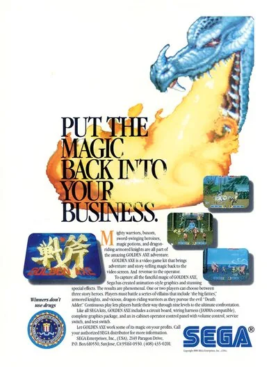

FBA (FinalBurn Alpha)
Golden Axe
- Año: 1989
- Desarrollador: Sega
- Género: Lucha / 2.5D
- Jugadores: 2 jugadores
GÉNERO
Golden Axe pertenece al género beat'em up, muy popularizado en la segunda mitad de los 80 y primera de los 90 en el ámbito de las recreativas y consolas domésticas. Junto con su estética o ambientación de fantasía épica medievalesca, contiene algunos elementos que, si bien recuerdan ligeramente al rol, su género no es tal, puesto que es lineal, hay una bajísima o escasa presencia del elemento narrativo, y no hay verdaderas "opciones" en cuanto al desarrollo de la aventura, no existe menú de inventario, posibilidad de ir a distintos lugares, factor de investigación, ni evolución en las habilidades o estadísticas de los personajes. Es un juego de acción, típicamente arcade, en el que el objetivo es luchar con espada y usar habilidades mágicas muy elementales, basadas en la recolección de pócimas o vasijas, de cuyo mayor o menor número depende el que, al activar la opción de magia, usemos un hechizo de mayor o menor potencia y envergadura, incrementando, de esta forma, de manera proporcional, el daño que causaremos a los enemigos presentes en pantalla.
CONTENIDOS DEL JUEGO
El videojuego se ambienta en una Edad Media fantástica en la que un villano llamado Death Adder aterroriza a los lugareños del reino de Yuria y ha raptado a la princesa y al rey.
Podremos elegir entre tres personajes distintos para embarcarnos en una aventura de rescate: Ax Battler es un humano musculoso de aspecto similar a Conan (aunque otras fuentes apuntan a un mayor parecido con el personaje He-Man), Tyris Flare es una amazona y Gilius Thunderhead un enano que blande un hacha (dorada en la versión original del juego) enorme.
Tyris es el personaje que posee la magia más espectacular; Gilius no posee casi magia pero tiene una resistencia envidiable y dotes de combate exclusivas; y el personaje de Ax es más equilibrado, teniendo capacidades medias de magia y combate.
Todos tienen algo por lo que vengarse, pues el sanguinario Death Adder ha matado a la madre de Ax, a los padres de Tyris y al hermano de Gili.
MECÁNICA DEL JUEGO
La mecánica del videojuego es simple: a medida que nos desplazamos por un terreno (generalmente con forma de animal gigante), se producen diversos encuentros:
- Los inocentes nos hablan en animaciones durante las cuales sólo podremos escuchar lo que nos tienen que decir. En otras ocasiones huyen de los enemigos sin que podamos interactuar con ellos.
- Los enemigos surgirán para acabar con la vida de los personajes. A diferencia de otros juegos beat'em up, si mueren y caen dentro de la zona de pantalla, no desaparecen, sino que se convierten en roca.
- Pequeños gnomos de diversos colores corren a lo largo de la pantalla con un saco a la espalda y podremos golpearlos para obtener una pócima mágica que dejan caer de sus sacos. En las pantallas de bonus (entre combate y combate), estos duendes (en función de su color) pueden también dejar caer comida, que hará recuperar la salud a los personajes.
- Dragones u otros animales míticos con cabeza de pájaro suelen aparecer montados por los enemigos. Si los derribamos de sus monturas, tendremos la oportunidad de apropiarnos de la bestia por un periodo de tiempo (hasta que nos derriben a su vez: una vez golpeado un cierto número de veces, el animal huye).
ENEMIGOS A BATIR
- Esbirros humanos: los varones blanden cachiporras o mazas. Las mujeres son más peligrosas porque su hacha tiene más alcance y causa más daño. Todos están ataviados con un casco.
- Esqueletos: son el único tipo de muertos vivientes en Golden Axe. Son hábiles, resistentes y surgen por sorpresa de la tierra en niveles avanzados. Llevan cimitarras y escudos.(Hay una versión de estos que si te quedas mucho tiempo en alguna parte del nivel aparecen de la nada y son de color negro. por lo general son dos).
- Gigantes: su resistencia y fuerza es mucho mayor que la de los esbirros. Su arma es el martillo gigante. En ocasiones presentan un talón de Aquiles: se reirán de nosotros antes de entrar en combate, permitiéndonos así asestarles el primer golpe a voluntad.
- Caballeros gigantes: blanden una descomunal espada y escudo, además de armadura. Son extremadamente resistentes, con golpes de gran alcance y a menudo es necesaria la ayuda de una montura o de recursos mágicos para poder derrotarlos.
- Death Adder: es el villano con el que sostendremos el enfrentamiento final. Un gran acopio de pociones mágicas y monturas poderosas es casi indispensable para vencer, puesto que Adder tiene una corte de villanos a su alrededor, blande un hacha descomunal, y por si fuera poco utiliza ataques mágicos (en forma de fuego que recorre el suelo en dirección al personaje). La resistencia de Adder es tal que el combate durará varios minutos con toda seguridad antes de vencerlo.
- Esbirros sombras: estos salen en todo el juego cuando te retrasas intencionalmente o te demoras en algún lugar sin avanzar por periodos más o menos prolongados, son extremadamente fuertes y varían de acuerdo a la zona donde te encuentres.
MONTURAS
- Cocatriz: este animal mítico no tiene alas, pero posee una cola con la que golpear a los enemigos.
- Dragón azul: escupe un chorro de fuego que golpea a los enemigos a corta distancia.
- Dragón rojo: (sólo aparece uno a lo largo del juego) lanza bolas de fuego en horizontal, de alcance ilimitado y que impactan contra cualquier enemigo en su recorrido. El dragón rojo es muy preciado y se debe conservar si queremos aumentar nuestras posibilidades de éxito en la batalla final.
ETAPAS
- Apertura: En esta el personaje se encuentra con un soldado malherido que advierte sobre el rapto del rey y la princesa por Death Adder. Aparecen esbirros y una amazona montada en un cocatriz. Se gana la etapa matando a los gigantes.
- Aldea de la tortuga: Se enfrenta a esbirros y amazonas, dos de las cuales aparecen cabalgando dragones. Se vence luego de derrotar a un esqueleto. El nombre se debe a que la aldea se encuentra sobre una tortuga gigante.
- Poblado: Aparece el único dragón rojo, el cual es muy dificil de preservar debido a que los enemigos intentarán atacar por ambos flancos y se debe saltar con precisión, pues el puente que une la aldea con el poblado está cortado. El enemigo final es un caballero de color blanco, que aparece de una taberna.
- La ruta del demonio: Es una de las etapas mas difíciles del juego. Se trata de un cementerio sobre una enorme águila, donde aparecen esqueletos y fantasmas que luchan contra el jugador como venganza por profanar su descanso. Estos aparecen de las tumbas (pequeños montículos) y son muy peligrosos, pues utilizan los mismos movimientos que el jugador, e incluso utilizan su escudo como arma. En el final se debe vencer a esbirros fantasmas y a tres esqueletos que atacan en conjunto.
- El castillo: La etapa final en la fortaleza de Death Adder, que mantiene encadenados al rey (amarrado de una pierna) y la princesa (con sus manos encadenadas). A diferencia de los otros enemigos, Death Adder no se convierte en roca, sino que muere debido a su propia arma, puesto que en un momento dado esta se eleva y cae sobre él mismo, matánDOLO.
VIDA Y MUERTE
- Salud, vidas y muerte: Varios bloques de color azul (entre 3 y 5 inicialmente, dependiendo de la configuración), situados en la parte inferior de la pantalla, simbolizan la salud del personaje. A medida que encaje golpes, su salud disminuirá y los bloques irán desapareciendo sucesivamente. El personaje puede en ocasiones quedarse sin bloque alguno para representar su salud: esto significa que podrá aguantar muy pocos golpes antes de morir.
Cuando el personaje muere, pierde "una vida", y reaparecerá mágicamente con salud al completo para jugar de nuevo. El número de vidas se indica a la izquierda de la salud, junto a un icono que representa la cara del personaje. Generalmente el número de vidas con las que la partida comienza es 2, pero esto puede variar dependiendo de los ajustes particulares del programa. Cuando el número de vidas se reduce a cero, el personaje muere definitivamente y es necesario "continuar" la partida con más créditos para seguir jugando.
- Muerte súbita: caer por los precipicios (puentes rotos, bordes del terreno) implica la pérdida automática de una vida, sin importar el nivel de salud del personaje. Si el personaje cabalgaba una montura, esta se perderá también para siempre.
Controles
Tres botones, todos en la fila de abajo.
| Panel | Juego |
|---|---|
 | Atacar |
 | Saltar |
 | Magia |
 | Moneda |
  | Empezar |
+  | Salir del juego |
El panel en FBA (FinalBurn Alpha)

Longplay

Partida completa de la recreativa (16 min), de AL82 Retrogaming Longplays: Golden Axe Longplay (Arcade) [60 FPS].